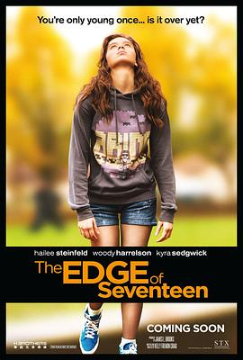

成长边缘 / The Edge of Seventeen
又名：十七岁的边缘 / 他妈的十七岁(台) / 最佳闺蜜 / Besties
作品信息
| 导演 | 凯莉·弗莱蒙·克雷格 |
| 编剧 | 凯莉·弗莱蒙·克雷格 |
| 主演 | 海莉·斯坦菲尔德 / 海莉·露·理查森 / 布莱克·詹纳 / 凯拉·塞吉维克 / 伍迪·哈里森 / 司徒颂曦 / 亚历山大·卡尔弗特 / 埃里克·李塞德 / 内斯塔·库珀 / 丹尼尔·巴孔 / 丽娜·伦纳 / 阿瓦·格雷斯·库珀 / 克里斯蒂安·迈克尔·库珀 / 耶拿·斯科迪耶 |
| 类型 | 剧情 / 喜剧 |
| 制片国家/地区 | 美国 |
| 语言 | 英语 |
| 上映日期 | 2016-09-16(多伦多电影节) / 2016-11-18(美国) |
| 片长 | 104分钟 |
| IMDb | tt1878870 |
最后一次看到是 2026-08-12T21:12:17+08:00 · 豆瓣原页